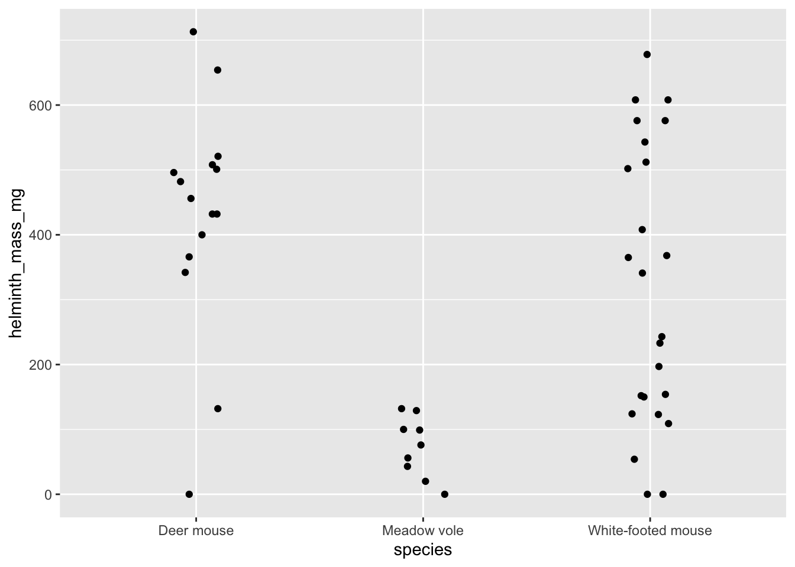
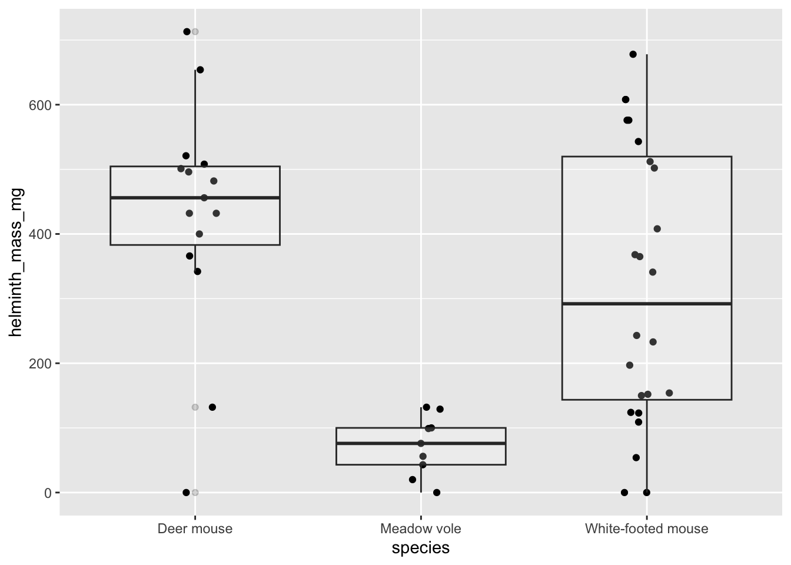
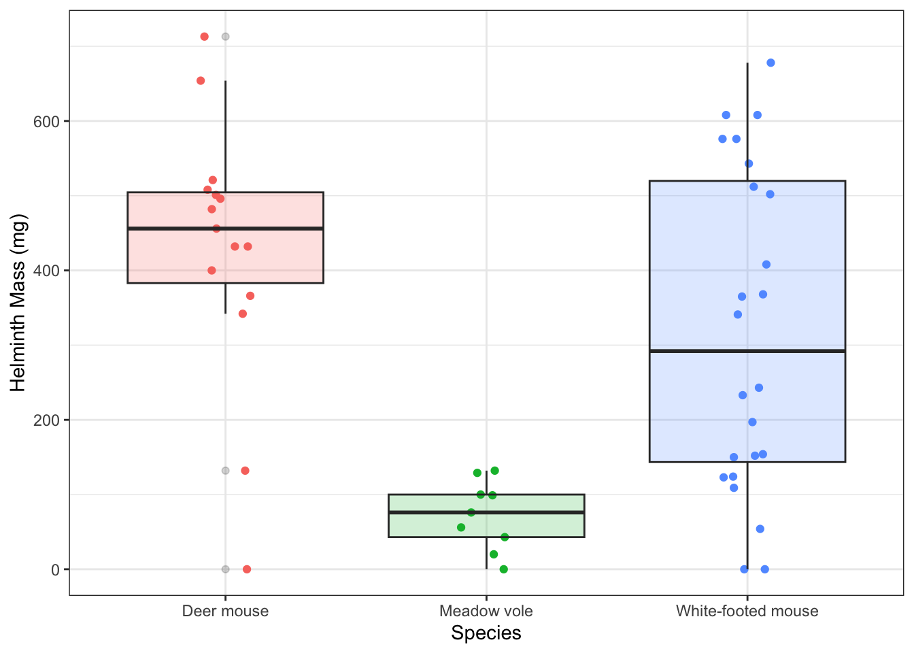

Now for what most consider the fun part, visualizing patterns in your data!
Setup:
## load tidyverselibrary(tidyverse)
Warning: package 'ggplot2' was built under R version 4.2.3
Warning: package 'tidyr' was built under R version 4.2.3
Warning: package 'readr' was built under R version 4.2.3
Warning: package 'dplyr' was built under R version 4.2.3
Warning: package 'stringr' was built under R version 4.2.3
## read datafake_mammals <-read.csv("https://docs.google.com/spreadsheets/d/e/2PACX-1vQ9mfx88nM33PC6WpIh3nSxMvkM98nEszw5gpUq7KdqbiCskF8Pqvrl0W2EqNf9rD1JEepb-hSMIb_j/pub?output=csv", header =TRUE)fake_insects <-read.csv("https://docs.google.com/spreadsheets/d/e/2PACX-1vT0snHMdsxzzzkxt_JVRFooJDB60lGSJQlrjUU29tGYOhIpqvx_pzja3Eqr9l5b4f76yMFvkiGzuK1Z/pub?output=csv")## convert species to factorfake_mammals$species <-as.factor(fake_mammals$species)## convert site type to factorfake_mammals$site_type <-as.factor(fake_mammals$site_type)## convert site to a factorfake_mammals$site <-as.factor(fake_mammals$site)## also do for insectsfake_insects$site <-as.factor(fake_insects$site)fake_insects$site_type <-as.factor(fake_insects$site_type)## lengthen the order count datalong_insects <-pivot_longer(data = fake_insects, cols =c(hymenoptera, lepidoptera, coleoptera, diptera, odonata, hemiptera, orthoptera, ephemeroptera, tricoptera, plecoptera),names_to ="order",values_to ="count" )## sum insects by siteinsect_counts <- long_insects %>%group_by(site, site_type) %>%summarize(total_insects =sum(count))## join datamammals_insects <- insect_counts %>%select(total_insects, site) %>%left_join(fake_mammals, by ="site")
14.1 General Notes on Data Visualization
There are a few things to keep in mind in general when creating figures, even outside of R:
Usually, figures should stand alone. This means that your figure can speak for itself, even without a caption. This means that axes and legends are clearly labelled, and trends are emphasized. It can also be helpful to annotate statistical output onto plots themselves.
When you can, show your actual data, instead of summary stats. Generally, when it’s not too messy, seeing all the data points is more informative to the audience. For example, you could plot a comparison of means with a point for each mean, but you could show more if you plot every point behind those means.
Finally, remember accessibility. Make color schemes appropriate for color-blindness, and make text large.
Note: for simpler code demonstration purposes, the figures that follow will not always necessarily meet these criteria.
14.2 The tidyverse’s ggplot2
When it comes to visualizing things in R, there are many methods. You can use the base R functions for plotting (plot, hist, lines, etc.), but I’m not super adept with them. Instead I’ll be walking you through using ggplot2, a package in the tidyverse family that is incredibly popular for data visualization. There is a special syntax that may take some getting used to though.
Essentially, you create a ggplot “object” (which is another special type of list with unique attributes), and then you pipe it through a series of ggplot functions to add components, themes, labels, etc. However, ggplot2 is older than the %>% pipe we have used, so it uses an old and deprecated pipe operator: +. R automatically knows to interpret + differently with ggplot objects and functions.
Here is an example of code creating a ggplot figure:
## first create the ggplot object## you need to specify your data in the data argument## then there is a special set of arguments called aesthetic arguments## (bound by the aes() sub-function)## these specify what variables will inform aesthetics of your figure## (e.g., axes, color, fills, sizes, etc.)ggplot(data = your_data, aes(x = variable1, y = variable2, color = variable3)) +geom_point(size =2) +## then you add geometry, this "geom" is for a scatterplotlabs(x ="Variable 1") +## then you can add other things like labelsscale_color_manual(values =c("red", "blue")) +## or specify scalestheme(axis.text =element_text(size =12)) ## finally you can modify parts of the theme, like fonts
It may seem complicated at first, but if you start small and work yourself up, you’ll be chaining together code to draw beautiful figures in no time!
14.3 Figure Types
Now we’ll go over how to make some common figure types, based on your analyses.
14.3.1 One Variable: Continuous
If you want to show the distribution of a single variable, you could use a histogram or a density plot.
For demonstration, let’s make a plots of white-footed mouse masses.
## create a data frame of only white-footed micewf_mice <-filter(fake_mammals, species =="White-footed mouse")## make a ggplot, use wf_mice data, and specify mass as the x variableggplot(data = wf_mice, aes(x = mass_g)) +geom_histogram()
`stat_bin()` using `bins = 30`. Pick better value with `binwidth`.
There, a simple histogram. Now let’s play with how it looks:
## make a ggplot, use wf_mice data, and specify mass as the x variableggplot(data = wf_mice, aes(x = mass_g)) +## give a wider binwidth to the histogram, and make it grey bars with black outlinesgeom_histogram(binwidth =1, fill ="grey", color ="black") +labs(x ="White-footed Mouse Mass (g)", y ="Count") +## nicer labelstheme_bw() ## my favorite simple theme
Cool! We could also look at this as a density plot! This will give more of a smooth line
## make a ggplot, use wf_mice data, and specify mass as the x variableggplot(data = wf_mice, aes(x = mass_g)) +geom_density() +## create density plotlabs(x ="White-footed Mouse Mass (g)", y ="Frequency") +## nicer labelstheme_bw() ## my favorite simple theme
14.3.2 One Variable: Categorical
If you want to show how many observations are in each category, you can use a bar plot.
In this demo, let’s make a bar plot of how many of each mammal species were caught.
## specify x as speciesggplot(data = fake_mammals, aes(x = species)) +geom_bar() ## make bar plot
The geom_bar function will count up all the observations of each species level to inform its bars. Thus, it is assuming you are giving it long data. Another closely related function is geom_col, which just makes a bar as tall as a number value in the data. For example, let’s make a bar plot of how many insect were caught at each site.
## need to specify two variables this time, one for the category, one for the count valueggplot(data = insect_counts, aes(x = site, y = total_insects)) +geom_col()
As you can see, your data format will determine whether you should use geom_col or geom_bar. Note: bar plots are generally only best-suited for counts among categories, when you’re dealing with measured variables, there are better options below.
14.3.3 Two Variables: Both Continuous
If you are showing the relationship between two continuous variables, scatterplots with or without lines are usually the best way to go.
Let’s try it out with the mammal data on body mass and helminth mass in mice:
## filter for mouse datamouse_data <-filter(fake_mammals, species %in%c("White-footed mouse", "Deer mouse"))## create ggplot with your two continuous variables as x and yggplot(data = mouse_data, aes(x = mass_g, y = helminth_mass_mg)) +geom_point() ## create scatterplot
## with trendlineggplot(data = mouse_data, aes(x = mass_g, y = helminth_mass_mg)) +geom_point() +## create scatterplot## create a trendline; method = "lm" makes it a straight line, se specifys whether there are error regions shadedgeom_smooth(method ="lm", se =FALSE)
`geom_smooth()` using formula = 'y ~ x'
14.3.4 Two Variables: One Continuous, One Categorical
Believe it or not, when one of your variables is categorical, a scatterplot is still appropriate. Why not a bar plot? Because scatterplots show all of your data!
Let’s demonstrate with the mammal data by comparing helminth mass among species.
## create ggplot with your two variables as x and yggplot(data = fake_mammals, aes(x = species, y = helminth_mass_mg)) +geom_jitter(width =0.1, height =0) ## create points that are "jittered" a bit along the x axis

In this plot, we use geom_jitter to make the point spread a bit around each categorical X value so that you can see them better (but we specify height = 0 so as not to mess with the mass information). Instead of a mean helminth mass given by a bar plot, we can see the spread of each set of datapoints, including outliers or lack thereof. Still it’s often nice to add some structure to these plots, which can be geom_boxplot or geom_violin (among others). Here is an example:
## create ggplot with your two variables as x and yggplot(data = fake_mammals, aes(x = species, y = helminth_mass_mg)) +geom_jitter(width =0.1, height =0) +## create points that are "jittered" a bit along the x axisgeom_boxplot(alpha =0.2) ## create boxplot at 20% transparency with alpha

We could also make this plot even clearer by adding color:
## create ggplot with your two variables as x and yggplot(data = fake_mammals, aes(x = species, y = helminth_mass_mg)) +geom_jitter(aes(color = species), width =0.1, height =0) +## you can put aes() inside geomsgeom_boxplot(aes(fill = species), alpha =0.2) +labs(x ="Species", y ="Helminth Mass (mg)") +theme_bw() +theme(legend.position ="none") ## legend is redundant here, so we can hide it

14.3.5 Non-Axis Variables
You can also use other aesthetics to represent variables in your data. For example, you could use color to show the density plots of mammal masses among species. And you can modify the colors with scale functions:
## make a ggplot, use wf_mice data, specify mass as the x variable and species as colorggplot(data = fake_mammals, aes(x = mass_g, color = species)) +geom_density() +## create density plotscale_color_manual(values =c("red", "blue", "green")) +## set my own colorslabs(x ="Mammal Mass (g)", y ="Frequency") +## nicer labelstheme_bw() ## my favorite simple theme
Similarly, you can add a third variable to a two variable figure. Take the helminth mass by mammal body mass figure from above:
ggplot(data = mouse_data, aes(x = mass_g, y = helminth_mass_mg, color = species)) +geom_point() +## create scatterplotgeom_smooth(method ="lm", se =FALSE)
`geom_smooth()` using formula = 'y ~ x'
Color isn’t the only way to show variables outside of axes, you can also use point shape, size, linetype, etc. In addition, you can split data among plot panels or “facets”, with facet_wrap() or facet_grid().
Let’s demonstrate with the long insect data, showing the insect communities for each site:
## specify order as y variable to show labels betterggplot(data = long_insects, aes(y = order, x = count, fill = site_type)) +geom_col() +facet_wrap(vars(site), nrow =2) +## specify site variable, two rows to separate habitatstheme_bw()
14.3.6 Colorblind Safe Colors
ggplot2 has colorblind-safe color schemes available from the tidyverse-related package viridis.
For example:
## make a ggplot, use wf_mice data, specify mass as the x variable and species as colorggplot(data = fake_mammals, aes(x = mass_g, color = species)) +geom_density(linewidth =1) +## create density plot, wider linesscale_color_viridis_d() +## set viridis discrete colorslabs(x ="Mammal Mass (g)", y ="Frequency") +## nicer labelstheme_bw() ## my favorite simple theme
We have only scratched the surface of what ggplot2 can do! We barely discussed how to edit theme elements, nor did we spend much time on customizing scales.
ggplot2 has an excellent reference website which you can find here: